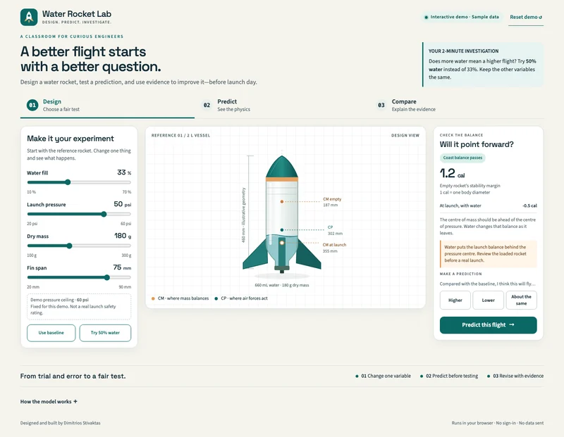

Enlarge screenshot.Source: Water Rocket Lab
Design, predict, compare
Choose water, pressure, mass and fins; record a prediction; inspect the calculated flight; then compare it with clearly labelled fictional launch data.
Teacher control. The teacher frames the fair test and interprets the model’s limits. The sample launch is not a validation result or a physical safety rating.
Choose a prediction, calculate the flight, then compare and write an evidence note.